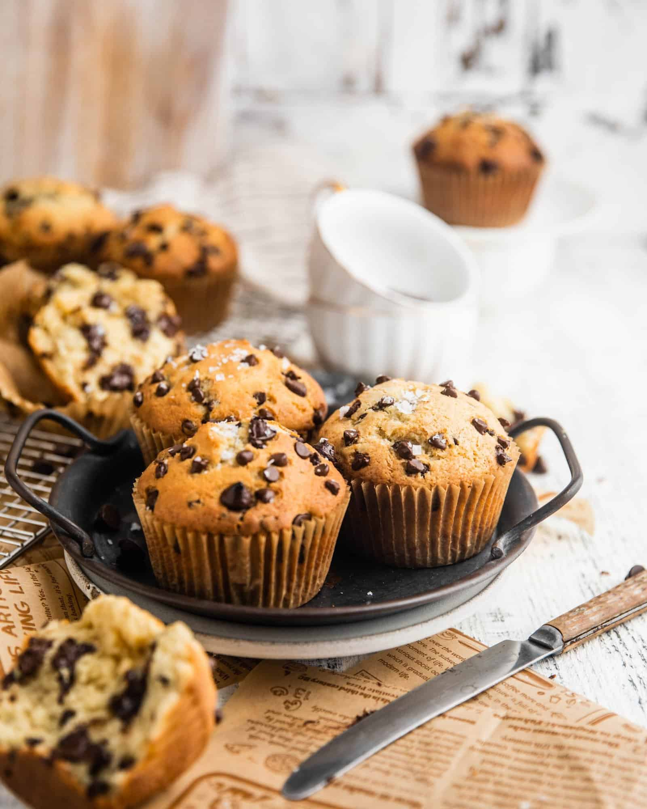

Chocolate Chip Cookies

Description
Chocolate Chip Muffins are my personal favorites! The sweetness of
the bread and the chocolate together makes my mouth water. The
specifics are mostly up to preference but here is a basic example.
Ingredients
- 2 & 1/2 cups (315g) all-purpose flour
- 1 tbsp (13g) baking powder
- 1 tsp (5g) baking soda
- 1/2 tsp (2.5g) salt
- 1/2 cup (114g) unsalted butter, melted and cooled
- 1 cup (200g) granulated sugar
- 2 large eggs
- 1 cup (250ml) buttermilk
- 1 tbsp (15ml) vanilla extract
- 1 & 1/2 cups (275g) semi-sweet chocolate chips
Steps
- Preheat oven to 425°F. Spray a 12 cup muffin tray with
non-stick cooking spray or line with paper liners.
- In a large bowl, toss together the flour, baking powder,
baking soda, salt and chocolate chips. Set aside.
- In a medium bowl, whisk together the melted butter, sugar,
eggs, milk and vanilla. Slowly add to the dry ingredients.
Gently fold together until JUST combined.
- Divide the batter into the 12 muffin cups and bake at 425°F
for 5 minutes. Then reduce the oven temperature to 375°F
and continue to bake for another 12-15 minutes or until
a toothpick inserted into the center comes out clean.
Do not overbake or the muffins will be dry. Let cool for
about 5-10 minutes and enjoy warm.
Credit
Taken entirely from this website(literally everything) so massive
credits to Lily Ernst!
Back